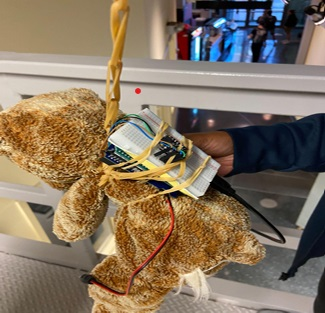
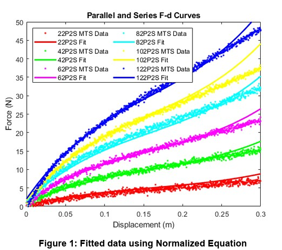

Bungee: Engineering the Perfect Fall
Introduction
The purpose of this lab was to maximize the displacement of a jumper using a bungee cord constructed from string and rubber bands given the height of the drop, maximum allowable acceleration interval during the entire fall, and mass of the jumper. We report the results of the experiment and how we arrived at our bungee configuration from characterizing the rubber bands, collecting acceleration data, and deriving an appropriate model from our calculations.
Rubber Band Characterization
We conducted MTS tests of varied rubber band configurations, focusing on even-numbered values of rubber bands in series and parallel. Using this data, we determined cubic models of best fit for each dataset and derived equations to normalize displacement calculations. The normalized force equation was then compared to the original data sets to ensure validity.
In our calculations, P represents the number of rubber bands in parallel, while S represents the number in series. We derived the following equation to model the force-extension relationship of the rubber bands:
Factual = c * P * Fnorm(x / S)
Where Fnorm(x) is given by:
Fnorm(x) = 322.7883x³ - 153.8337x² + 38.8496x + 0.2610
Using the Accelerometer
We measured acceleration during free fall using an Arduino, Adafruit shield, accelerometer, and SD card. Our initial configuration consisted of 15 rubber bands, each paired in series and parallel. Acceleration data was gathered at a frequency of 400Hz and refined for better accuracy.
Mathematical Modeling
We created a MATLAB function that takes mass, height, and max acceleration as inputs to predict the optimal bungee cord configuration. Using energy balance equations, we integrated the force-extension curve to determine maximum displacement. The model tested multiple configurations to identify the one that stayed within acceleration constraints while maximizing fall distance.
Results and Analysis
Our model suggested 17 rubber bands in series and 5 in parallel as the optimal setup. However, real-world test results showed a slight discrepancy, as the system did not reach the expected maximum acceleration due to underestimated stiffness. Future improvements could incorporate loss factors at a molecular level for better accuracy.
Report
MATLAB Code
Below are the MATLAB scripts used in this project: